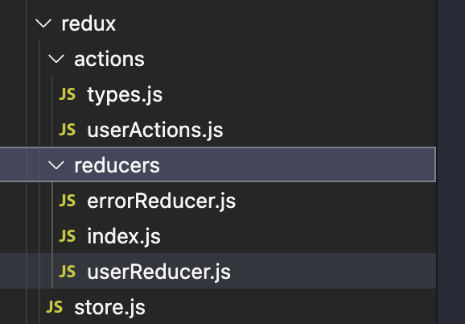
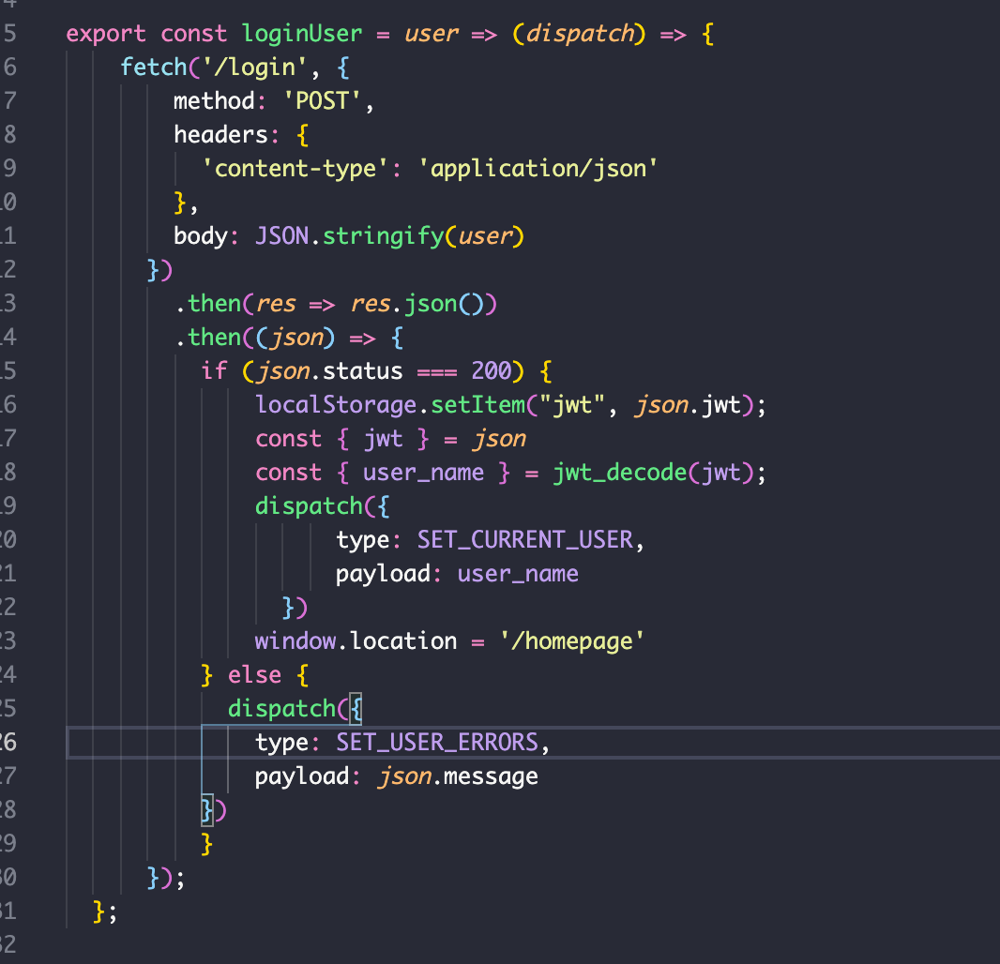
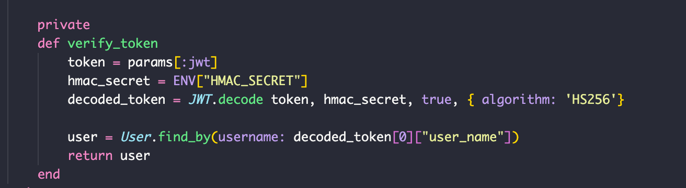

React/Redux Flatiron Project
It was the summer of 1969…
No, just kidding this is a blog post about software engineering.
The application I built is made with React and Redux on the front end and Rails in API mode on the back end.
About the app
The concept of the application is that users can create an account and keep track of all of the items on their wishlist from a single location.
Transitioning right into the technology, Redux was definitely the most challenging aspect of creating this project. All of the boilerplate involved in set up is daunting and at first, down right confusing.
Redux
Greatest Challenges
The use case for Redux in my application is storing the current user logged in and making that available for all of the components that need it.
My login page is not directly connected to the homepage so passing props around would have not been ideal. Instead, when the user clicks the button to authenticate their username and password, an action is called that dispatches to a reducer.
If log in is successful the server responds with a status code of 200 and the current user is store in global state. Else, an error message is stored in the Redux store that the Login page can access to display it on the DOM.
JWTs
JWTs are generated in the server and sent to the browser to be stored in local storage. After a user is authenticated, this becomes the basis for further communication between the front and backend. Since they are encrypted and decoded with a secret key stored as and ENV variable, it makes the application more secure.
Biggest Accomplishments
Circling back to Redux, while it was quite difficult to grasp initially, it is very powerful.
It makes development in React have much more potential since state sharing can occur between essentially any components in the application.
Conclusion
I’m happy with how the app turned out and am humbled each time I work on another project how difficult styling (CSS, SASS) is and have come to appreciate it much more.